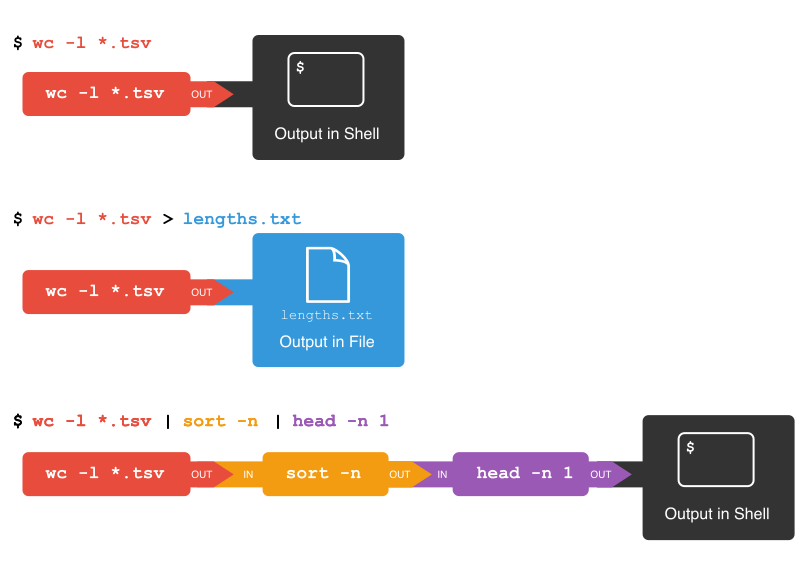

Was ich gelernt habe: Mit IT Systemen muss man immer flexibel bleiben!
Einführung und LibraryCarpentry
Nach der Einführung, Vorstellungs- und Fragerunden und Einrichten von Azure begannen wir mit dem ersten Input, der Unix Shell.
Repetition Unix Shell
Eine Shell ist die Schnittstelle zum Linux System. Sie führt die Befehle, die ich in der Kommandozeile eingebe, aus. Mit diesen Befehlen kann
man Server administrieren und kleine Aufgaben automatisieren (anhand von Shell Skripten). Beispielsweise kann man über die Kommandozeile anhand eines Links
aus dem Internet direkt ein File herunterladen.
Als Aufgabe bekamen wir zwei Übungen von Library Carpentry. Beim Lösen der shell-lesson hatte ich soweit keine Probleme. Am Ende der
zweiten Lektion war ich etwas verwirrt, weil ich die Befehle 'echo' und
die $Variablen nur aus der Programmiersprache PHP kenne.
Während wir in der virtual machine arbeiteten, fielen mir auch die Parallelen zu Git Bash auf, das wir letztes Semester
dazu benutzt haben um auf dem Server der _HAW Hamburg_ unsere Datenbankprojekte zu schreiben. Auch während der Repetition der Unix Shell gerade eben entdeckte ich dieselben
Befehle aus PHP wie zum Beispiel die if/while und for Schlaufen.
Zuhause machte ich die GitHub Pages Schulung zur Erstellung eines Blogs. Gut machbar, bei einer Aufgabe hatte ich keine Ahnung was ich tun sollte, allerdings funktionierte es nach einer Pause. Den Blog anschliessend zu erstellen war die grössere Herausforderung. Ich erstellte eine config und eine index Datei und anschliessend den Ordner mit den posts. Während dem Schreiben des ersten Posts schlug github mir noch vor, eine readme Datei zu erstellen für die Frontseite des Blogs.
Erfahrungsbericht Übungen 4&5
Übung 4 handelte von Loops. In einem Loop wird ein Befehl auf alle Files angewendet, die im Befehl angesprochen werden. So kann man, wie in Übung 5 folgte, beispielsweise Data mining machen.
Folgendes Bild hatten wir ja bereits im Unterricht angeschaut.

Bevor ich die Übung machte, während der Repetition, hat mir diese Darstellung einiges an Konzentration gefordert. Jedoch, glaube ich, habe ich es jetzt mit den Erklärungen aus der Übung verstanden.
wc -1 .tsv zählt alle Linien in den Dokumenten (ohne Anzahl Wörter und Bytes), die auf .tsv enden. >lengths.txt speichert die Resultate direkt in ein File, welches lengths.txt heisst.
sort -n sortiert die Ergebnisse des ersten Befehls numerisch und head -n 1 gibt die erste Zeile aus. Der senkrechte Strich (|) verbindet die Befehle zu einer Pipe. In Übung 5 verstand ich
die Theorie relativ gut, allerdings war ich bei den anschliessenden Aufgaben teilweise überfordert und hatte keine Ahnung, wie ich diese lösen sollte. Vor allem die vielen verschiedenen Flags verwirrten mich.
Ich werde mir dafür ein eigenes cheatsheet erstellen, wo alle Befehle und Flags plus deren Funktion aufgelistet werden.
Der erste Unterrichtsblock hat, abgesehen von der etwas langen Einführung, Spass gemacht und ich freue mich auf die weiteren Lektionen - die wohl alle online stattfinden werden, danke Corona-Virus!
 für diesen Blog benutzte Markdown Cheatsheet von github
und von markdownguide.
für diesen Blog benutzte Markdown Cheatsheet von github
und von markdownguide.